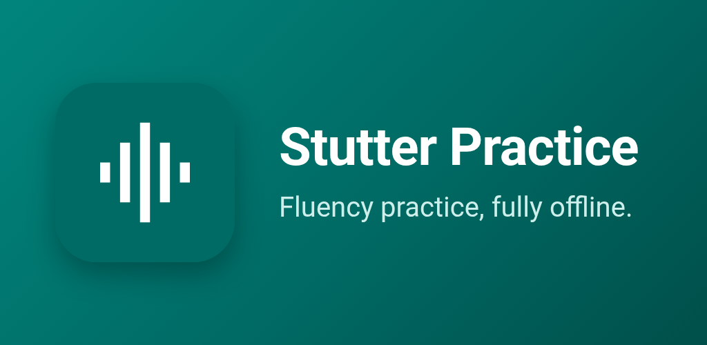
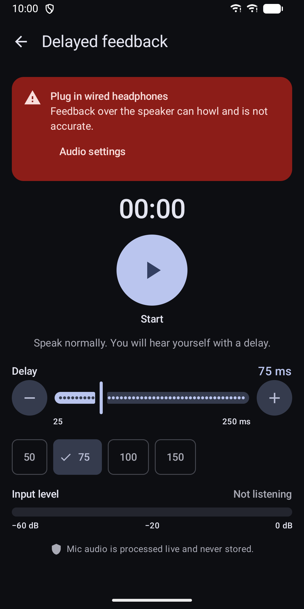
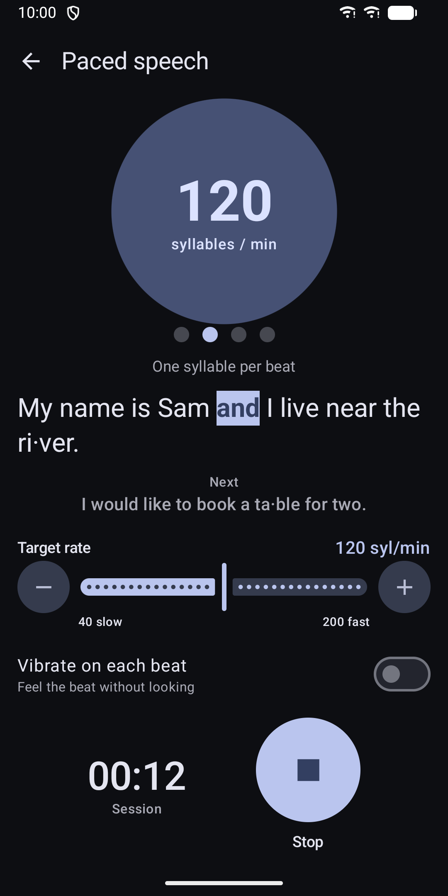
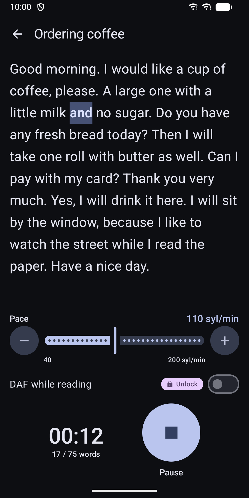
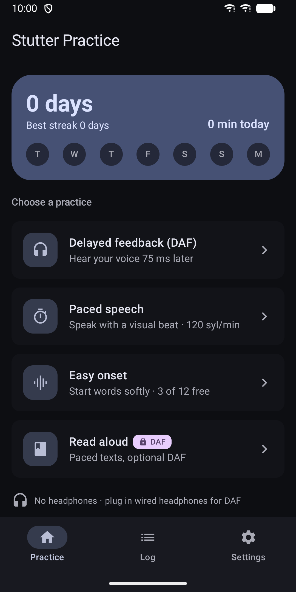
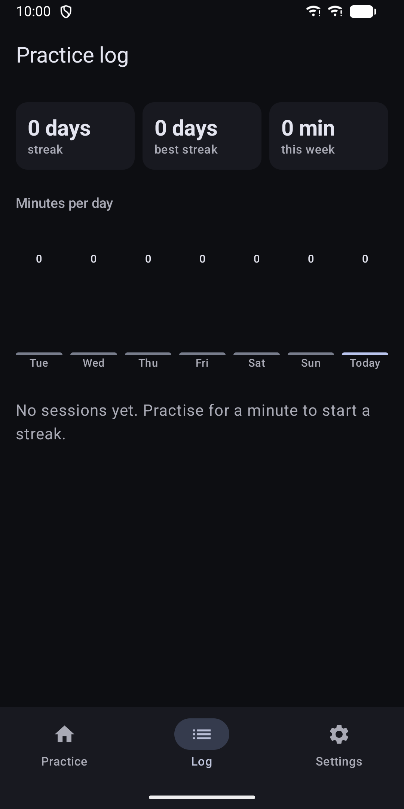
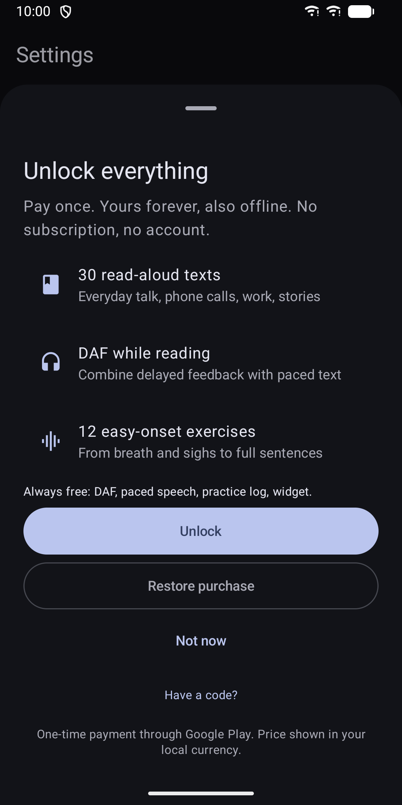

Stutter Practice: DAF Offline
Offline DAF, paced speech and easy onset practice. Pay once, no subscription.







About
Practise fluent speech on your own, anywhere, without an account or an internet connection. Stutter Practice is a toolkit for adults who stutter. It brings together exercises that many speech therapists use, in one calm, private app. DELAYED AUDITORY FEEDBACK (DAF) Hear your own voice a moment later through wired or USB headphones. Set the delay from 25 to 250 ms with a slider, plus and minus buttons or quick presets. A short calibration reads your phone's own audio delay, and you can fine-tune it by ear, so the delay you choose is close to the delay you hear. The app warns you when Bluetooth or the speaker is active, because they add extra delay. PACED SPEECH A visual metronome sets a target rate from 40 to 200 syllables per minute. Practice sentences light up one syllable per beat, with the next sentence shown below. Turn on vibration to feel the beat without looking. EASY ONSET Start words gently. A live onset meter shows how softly your voice rises and tells you whether the start was gentle or too sudden. 12 exercises go from breath and sighs to full sentences. READ ALOUD 30 English texts at three levels: everyday talk, phone calls, work and stories. Each word is highlighted at your chosen pace. You can combine reading with DAF. PRACTICE LOG AND WIDGET Every session is saved on your phone with its settings. See your streak, today's minutes and a weekly chart. Add the home-screen widget to keep your streak in view. PRIVATE BY DESIGN • No internet permission. Nothing is sent anywhere. • Your voice is processed live and never recorded or stored. • No account, no ads, no analytics. • Your practice log stays on your phone unless you switch on Google backup. FREE, WITH A ONE-TIME UNLOCK Free: DAF, paced speech, 3 easy-onset exercises, 3 texts, the full practice log and the widget. One payment unlocks all 12 exercises, all 30 texts and DAF while reading. No subscription. ACCESSIBLE Light and dark theme follow your system. Works on phones and tablets. Large touch targets and screen reader labels throughout. Use wired or USB headphones for DAF. Texts are in English. Stutter Practice is not a medical device and does not replace therapy. It works well alongside guidance from a speech and language therapist.